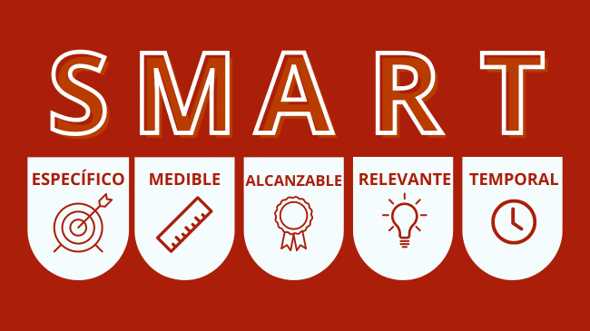
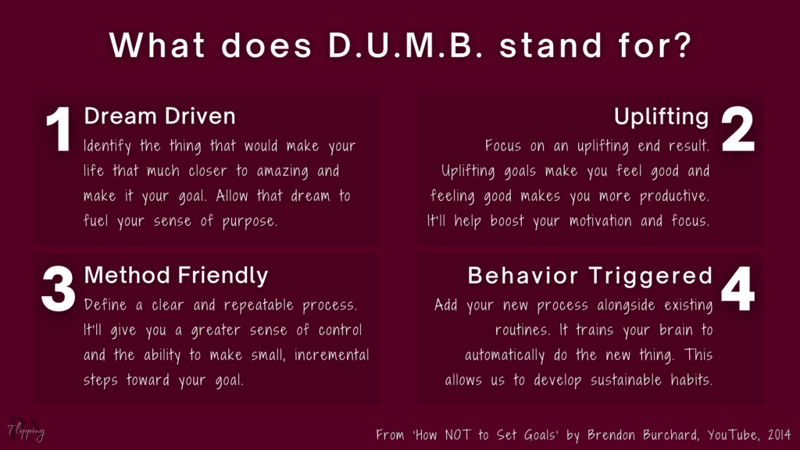
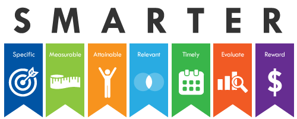

En un mercado digital en constante evolución,
desarrollar una estrategia de marketing efectiva es clave para posicionar con éxito un producto o servicio.
Para lograrlo, las empresas deben adoptar un enfoque estructurado que abarque desde la investigación de mercado hasta el
análisis detallado de resultados. En esta guía, exploraremos los pasos fundamentales: la investigación del cliente ideal y sus necesidades,
el diseño de un producto competitivo, el análisis de la competencia,
la gestión adecuada del presupuesto y la definición de precios y posicionamiento.
Además, explicaremos cómo establecer objetivos realistas y monitorear los avances de manera efectiva,
todo orientado a construir una marca sólida y a optimizar la presencia online.
Aquí encontrarás las herramientas y estrategias clave
para definir y ejecutar un plan de marketing online que impulse el crecimiento,
fortalezca la relación con los clientes y genere un impacto duradero en el mercado.
Resumen
En marketing digital, la investigación es clave para conocer al mercado y al Buyer Persona, el perfil del cliente ideal, que permite personalizar la estrategia.
El producto debe enfocarse en cómo satisface necesidades y deseos, destacando el valor que aporta al consumidor mediante Inbound Marketing y contenido relevante.
Analizar a la competencia es esencial para adaptar y diferenciar la oferta de la empresa, mejorando su visibilidad.
También, definir un presupuesto adecuado permite maximizar el retorno de inversión (ROI),
combinando campañas de pago (SEM, PPC) con crecimiento orgánico (SEO, contenido).
Posicionamiento y marca se construyen con una comunicación clara que refuerce la identidad de la empresa,
utilizando redes sociales, email marketing y blogs. Trazar objetivos reales y medibles, como mejorar la conversión o generar leads,
garantiza que las metas del marketing digital estén alineadas con el negocio.
El Customer Journey (viaje del cliente) ayuda a guiar al usuario desde el interés inicial hasta la compra.
Monitorear y analizar resultados es fundamental: métricas como tasa de conversión, costo de adquisición de clientes (CAC)
y ROI permiten ajustar la estrategia para optimizar recursos.
Finalmente, una estrategia de marketing online integra Inbound Marketing, contenido SEO, publicidad paga y redes sociales para atraer y convertir leads.
Investigación
Las organizaciones enfrentan un desafío en la era actual: convertir datos en información útil para tomar decisiones empresariales.
En un mercado en constante cambio, con consumidores cuyas necesidades y hábitos de consumo evolucionan rápidamente, las investigaciones de mercado se han convertido en herramientas clave.
Según estudios, en España, el 37% de los clientes de Ecommerce pagaría más por entregas rápidas, y en México, el 17% usa banca digital.
La investigación de mercado ayuda a las empresas a enfocar recursos de manera estratégica.
Los estudios de mercado se clasifican en tres tipos principales:
Exploratorios
Analizan datos preliminares para obtener ideas y evaluar productos mediante encuestas y grupos focales.
Determinan relaciones causa-efecto entre variables, permitiendo evaluar factores que impactan directamente en ventas, como el uso de chatbots en atención al cliente.
La investigación de mercado facilita la toma de decisiones estratégicas, aporta información para resolver problemas futuros,
mejora la comunicación con los clientes y ayuda a entender las tendencias del mercado, fortaleciendo así la competitividad empresarial.
En el campo de la investigación el azar no favorece más que a los espíritus preparados.
Louis Pasteur
Producto
En marketing, un producto es un bien o servicio creado por una empresa para satisfacer las necesidades del consumidor.
Es el eje de la estrategia de marketing, ya que las decisiones sobre precio, promoción y distribución dependen de su existencia.
Existen diferentes clasificaciones de productos:
Bienes y servicios
Los bienes otorgan propiedad, mientras que los servicios solo cubren la necesidad.
Las materias primas requieren transformación; los productos semiacabados necesitan intervención del usuario; los acabados están listos para el consumo.
Para crear productos exitosos, es fundamental que las empresas desarrollen una comprensión profunda de cómo sus productos pueden satisfacer las diversas necesidades y expectativas de los consumidores.
Un producto no solo debe cumplir una función, sino que debe alinearse con los valores y preferencias de su público objetivo,
lo que aumenta su atractivo y su potencial de éxito en el mercado.
Un buen producto es más que una simple solución; es una experiencia que el consumidor valora y con la que se identifica.
Las empresas deben pensar en cómo cada aspecto del producto su diseño, funcionalidad, durabilidad y conveniencia contribuye a su percepción de valor.
La adaptabilidad también es crucial:
en un mercado en constante cambio, los productos deben evolucionar para mantenerse relevantes y cumplir con nuevas demandas o tendencias.
Además, un enfoque en la calidad y la utilidad del producto fortalece la relación de la marca con los clientes.
Un producto bien diseñado y duradero fomenta la lealtad del consumidor y mejora la imagen de la empresa, generando una ventaja competitiva sostenible.
De esta forma, el éxito de una empresa no solo depende de su capacidad para innovar,
sino de crear productos que se adapten y resalten en un mercado dinámico,
contribuyendo directamente al crecimiento y a la sostenibilidad de la organización.
Análisis de la competencia
Un análisis de la competencia permite a las empresas entender mejor su entorno comercial, posicionarse en el mercado y desarrollar estrategias efectivas.
Este proceso incluye identificar a los competidores en tres categorías: directos (productos o servicios similares),
indirectos (productos distintos que cubren necesidades similares) y de reemplazo (alternativas que pueden sustituir al producto).
La investigación evalúa sus productos, precios, métodos de promoción y puntos de venta, además de comparar sus fortalezas y debilidades con las propias.
Realizar un análisis competitivo ayuda a detectar oportunidades, ajustar la estrategia para satisfacer necesidades no cubiertas y mantenerse al tanto de tendencias del sector. También permite identificar posibles amenazas y fijar puntos de referencia, facilitando el crecimiento a largo plazo. La información obtenida sirve como base para mejorar el servicio al cliente, innovar en la oferta y crear una ventaja competitiva más sólida.
Para mantener su relevancia, las empresas deben realizar este análisis de manera periódica,
evaluando y adaptando su plan en función de los cambios del mercado y la evolución de sus competidores.
Además, el análisis de la competencia impulsa la toma de decisiones basadas en datos,
lo que permite minimizar riesgos al anticiparse a movimientos de los rivales y responder de manera estratégica.
Con una comprensión clara del mercado y de las preferencias de los consumidores, las empresas pueden ajustar sus campañas de marketing,
mejorar la comunicación de sus ventajas y diseñar productos o servicios que se alineen mejor con las demandas actuales.
En un entorno dinámico y competitivo, este enfoque no solo asegura que el negocio esté preparado para enfrentar nuevos desafíos,
sino que también lo posiciona para aprovechar cualquier oportunidad emergente,
generando así un crecimiento sostenido y una lealtad más profunda en su base de clientes.
Presupuesto
Un presupuesto de marketing es un plan financiero que detalla el dinero que una empresa planea gastar en sus actividades de marketing durante un periodo específico.
Este presupuesto incluye diversas categorías de gasto, como publicidad, promociones, relaciones públicas, investigación de mercado y desarrollo de productos,
estableciendo límites para cada una. Su propósito principal es ayudar a la empresa a gestionar sus recursos de manera eficiente,
optimizar el retorno sobre la inversión (ROI) y ajustar las estrategias en caso de cambios imprevistos.
Además, sirve como herramienta de planificación para asegurar que los esfuerzos de marketing estén alineados con los objetivos empresariales y
las condiciones del mercado.
Para calcular un presupuesto de marketing, se deben tener en cuenta factores como los objetivos específicos que la empresa desea alcanzar,
su situación financiera, los costos de las actividades a realizar, los resultados de investigaciones de mercado,
la competencia y factores externos como la inflación.
Existen distintos tipos de presupuestos: basados en los objetivos (ajustados a las necesidades reales y medibles de la empresa),
la competencia (para igualar o superar las inversiones de los competidores), el porcentaje de ventas (un porcentaje fijo sobre las ventas o beneficios)
y lo disponible (lo que quede después de cubrir otros gastos operativos).
Un presupuesto de marketing efectivo debe ser realista, estructurado y detallado,
permitiendo la flexibilidad para realizar ajustes conforme se obtienen resultados.
Es fundamental que esté alineado con los objetivos del plan de marketing,
con un seguimiento continuo de los indicadores clave de rendimiento para optimizar las decisiones
y garantizar el éxito de las estrategias implementadas.
Precio, posicionamiento y marca.
La relación entre el posicionamiento de marca y la estrategia de precios es clave para el éxito de cualquier empresa,
ya que el precio no solo impacta en la rentabilidad, sino también en la percepción que los consumidores tienen de la marca.
El precio establece el valor percibido de un producto o servicio, influyendo directamente en cómo los consumidores posicionan a una marca en su mente.
Dependiendo de la estrategia de precios, una marca puede ser vista como exclusiva, de lujo o accesible.
El posicionamiento de marca es una estrategia de marketing que busca establecer cómo una empresa quiere ser percibida frente a sus competidores.
Implica analizar las fortalezas y debilidades de la marca, entender las necesidades del consumidor y
diferenciarse en el mercado mediante atributos clave como calidad, innovación y servicio al cliente.
Un buen posicionamiento no solo ayuda a crear una imagen sólida,
sino que también permite a la empresa diferenciarse y cobrar precios más altos debido al valor percibido de la marca.
Por otro lado, la estrategia de precios debe considerar diversos factores, como los costos de producción,
los precios de la competencia, el valor percibido por el cliente y los objetivos de la empresa.
Un precio adecuado debe ser sostenible, competitivo y alineado con los objetivos a largo plazo de la empresa.
Fijar precios demasiado bajos puede reducir la rentabilidad, mientras que precios demasiado altos pueden alejar a los consumidores.
Es crucial encontrar un equilibrio que maximice la rentabilidad sin perder competitividad en el mercado.
La relación entre ambas estrategias es vital.
La estrategia de precios no debe verse como un elemento aislado, sino como una herramienta para reforzar el posicionamiento de la marca.
Por ejemplo, si una empresa establece precios altos, puede ser percibida como exclusiva y de alta calidad.
Por el contrario, si establece precios bajos, puede atraer a un público más amplio pero podría ser vista como una opción económica.
Para lograr un posicionamiento de marca exitoso, es importante tener en cuenta varios aspectos, como:
Conocer a tu público objetivo:
Investigar sus necesidades, deseos y comportamientos de compra ayudará a definir tanto la estrategia de precios como el posicionamiento de marca.
Analizar a la competencia:
Estudiar cómo se posicionan y qué precios manejan los competidores te permitirá encontrar un nicho y establecer precios competitivos.
Definir la propuesta de valor:
La propuesta debe explicar por qué los consumidores deberían elegir tu marca.
Esto debe estar alineado con el valor que perciben tus productos o servicios.
Comunicar tu posicionamiento y precios:
Una vez definidas las estrategias,
comunícalas de manera clara y efectiva para que los consumidores comprendan el valor de tu marca.
Establecer una estrategia de precios coherente:
Según la propuesta de valor y el análisis del mercado, decide si tu marca será de lujo, de bajo costo o de precios premium, y mantén coherencia en todo momento.
En resumen, la estrategia de precios y el posicionamiento de marca están estrechamente relacionados. Un precio bien establecido,
alineado con el posicionamiento de la marca, puede generar lealtad de los clientes, aumentar la competitividad y mejorar la percepción general de la marca.
Sin embargo, es crucial evitar errores comunes,
como fijar precios demasiado altos o bajos, no considerar el valor percibido por el cliente y no ajustar los precios a los cambios del mercado.
Traza objetivos reales.
Establecer metas realistas es clave para el crecimiento personal y profesional. La metodología SMART, siglas en inglés de Específico, Medible, Alcanzable, Realista y con Límite de tiempo, es una herramienta eficaz para definir objetivos alcanzables.
Para hacerlo, se recomienda establecer metas claras y detalladas en lugar de objetivos vagos;
por ejemplo, en lugar de "quiero estar en forma", especificar "quiero correr 5 km tres veces por semana".

Dividir las metas grandes en objetivos más pequeños facilita el progreso, y definir un plan detallado permite anticiparse a obstáculos.
La flexibilidad es esencial, ya que es probable que debas ajustar tus metas según avances.
Celebrar los logros, por pequeños que sean, también ayuda a mantener la motivación.
Por otro lado, existen críticas al método SMART, como el método DUMB (guiado por sueños, inspirador, audaz y con mentalidad positiva),
que fomenta objetivos ambiciosos y motivadores, incluso si no siempre son realistas.
Aunque ambos enfoques tienen sus ventajas, el método SMART es ideal para metas que requieren claridad, precisión y un enfoque sistemático.

Imagen de: https://www.flippingba.com/dumb-goals
Finalmente, el método SMARTER añade dos elementos adicionales: Evaluación y Recompnesa,
para ajustar los objetivos conforme se avanza, garantizando que sigan alineados con el propósito inicial y adaptados a los resultados alcanzados.
En resumen, establecer objetivos bien definidos, medibles y adaptables, ya sea mediante SMART, SMARTER o DUMB,
ayuda a trazar un camino claro hacia el éxito, permitiendo a las personas y equipos alcanzar metas significativas.

Monitoreo y análisis de resultados.
Medir los resultados en marketing digital permite a las empresas ajustar sus estrategias y tomar decisiones más efectivas para alcanzar sus objetivos.
A diferencia del marketing tradicional,
donde no siempre se podía conocer el impacto real de las campañas,
en el ámbito digital cada acción genera datos medibles que ayudan a entender su efectividad y optimizar los recursos.
La medición de resultados en marketing digital es clave para evaluar si una campaña está funcionando,
entender qué aspectos pueden mejorarse y fijar metas claras.
Los datos permiten optimizar el presupuesto asignado,
identificar las estrategias más efectivas y respaldar con cifras el trabajo del equipo ante los superiores.
Entre los beneficios del marketing digital se encuentran la generación de leads,
las oportunidades de venta, el ahorro en costos y la creación de autoridad y ventaja competitiva para la marca.
Gracias a tácticas como el SEO, el marketing de contenidos,
las redes sociales y el email marketing, las empresas pueden alcanzar un público más amplio, eliminar barreras geográficas y reforzar su relación con los clientes.
Las métricas más utilizadas incluyen el costo de adquisición de clientes (CAC), el retorno de inversión (ROI),
la tasa de conversión y el número de visitantes.
Estas métricas, al combinarse, proporcionan una visión detallada del rendimiento de las campañas.
Para obtener los mejores resultados, es necesario definir objetivos claros y seleccionar los KPIs adecuados,
evitando métricas de vanidad que no aporten valor real.
Las herramientas analíticas como Google Analytics y sistemas de CRM ayudan a monitorear estos datos y compartirlos de manera efectiva con el equipo.
Tras el análisis, los líderes deben ajustar estrategias según los resultados obtenidos,
asegurando así el crecimiento de la empresa y el cumplimiento de sus objetivos en el entorno digital.
¿Cómo Definir una Estrategia de Marketing Online?
El Marketing Digital es un conjunto de estrategias usadas por empresas o personas en Internet para atraer nuevos negocios,
construir relaciones y fortalecer la identidad de una marca. Utiliza herramientas como SEO,
Inbound Marketing y Marketing de Contenidos para alcanzar al público adecuado. Este tipo de marketing ha evolucionado desde los años 90 con la Web 1.0,
pasando por la Web 2.0 que permitió una interacción más cercana entre usuarios y empresas.
Las estrategias principales en el Marketing Digital incluyen el Inbound Marketing, que atrae al consumidor a través de contenido valioso,
el SEO para posicionarse en motores de búsqueda sin pagar por anuncios, y el SEM que abarca los anuncios pagos.
Otras tácticas clave son el Marketing de Contenidos, Marketing en Redes Sociales, y el Email Marketing, que permite una comunicación directa y personalizada.
El Marketing Digital ofrece varias ventajas: mayor interacción con el público, análisis en tiempo real,
alcance a una audiencia global y precisión en la segmentación.
Además, permite retener clientes mediante el uso de datos y estrategias de fidelización,
todo a costos relativamente bajos comparados con el marketing tradicional.
Jenny Thai propone el siguiente plan de 12 días para definir una etrategia de Marketing Digital:
Planificación (Primeros 7 días)
Define tus objetivos, público y posicionamiento (GAP)
Definir una estrategia de marketing online sólida es esencial para que cualquier negocio destaque y
mantenga su competitividad en un mercado cada vez más digital y dinámico.
Desde la investigación de mercado hasta la fijación de objetivos y el análisis de resultados,
cada paso juega un papel fundamental para lograr una presencia digital efectiva.
Invertir en un buen análisis de la competencia, establecer un presupuesto acorde y posicionar el
producto con una propuesta de valor clara permite construir una marca fuerte que resuene con el público adecuado.
La clave para el éxito está en la adaptabilidad: evaluar y ajustar la estrategia en función de los resultados obtenidos
garantiza que el esfuerzo de marketing se mantenga relevante y efectivo.
Con estos principios como base, tu negocio estará mejor preparado para crecer de manera sostenible en el entorno digital.